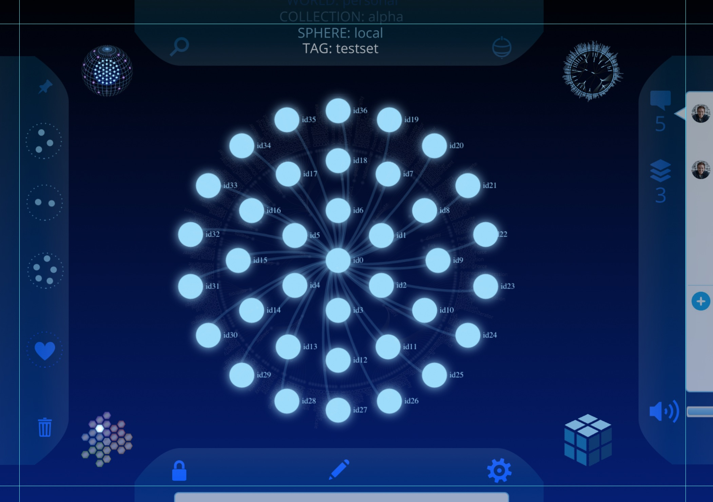

This is free IP released under a
CC BY SA 4.0 license.
This is free IP released under a
CC BY SA 4.0 license.
Nodesphere
Unifying all of the things
Nodesphere is an ambitious project designed to connect the data sources that we care most about into a single unified dashboard:
Nodesphere is a collection of isomorphic visualization-style interfaces. Each interface has particular strengths, so the user can switch between interfaces depending upon the data set and the desired interaction style.
Nodesphere uses semantic crunching technology, which reduces data inputs into their atomic semantic nodes. Regardless of the data source, the important knowledge is digested into an interconnected graph, with appropriate connections between tags, categories, peoples' names, etc.
Upon this foundation rests an ecosystem of open source adapters, allowing us to pull data from the API's of our most common social and collaboration tools.
Nodesphere allows us to take back our data. Imagine working in a tight-knit core of half a dozen collaborators -- their work is spread through multiple software systems: perhaps Github, Trello, Twitter, and Slack. Nodesphere gives a single unified interface to make sense of all of the data aggregated in realtime from multiple sources, and allows us to fluidly navigate to the original source application. Nodesphere does not want to take over our personal data, it wants to connect the data that is currently in a variety of silos, bringing it together into a single unified dashboard.
Nodesphere is in active development, focussing on:
Check out our open source projects and what we are working on next.
This is free IP released under a
CC BY SA 4.0 license.